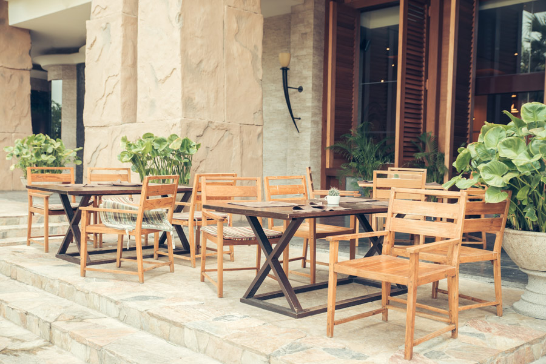

お知らせ
コロナウィルスの対策実施中
■入店のお客様へのアルコール消毒の実施
お客様来店時に際し、入り口で店舗スタッフによるお客様への
アルコール消毒を行ってから店内にご案内としております。
■店舗従業員のアルコール消毒の実施
店舗従業員は30分後とに手洗い消毒かつ料理配膳時のアルコール消毒の徹底を行い、
お料理、ドリンク提供時商品提供時に手の消毒実施。お客様が帰った後、テーブル、椅子、
メニューに関してアルコール消毒の徹底を行っております。
■HPを更新しました（5/20）
店舗情報
- 店名
- Sweet Market
- 住所
- 秋田市山王1-1-1
- TLE
- 018-865-3031
- 営業時間
- 毎日11：00～16時(Lo/15:30)
店舗の様子
